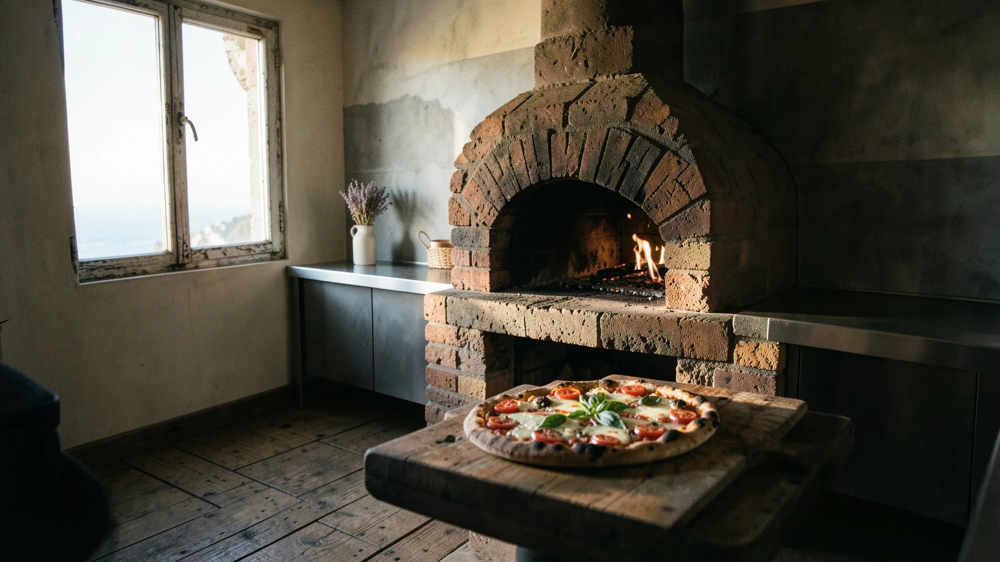
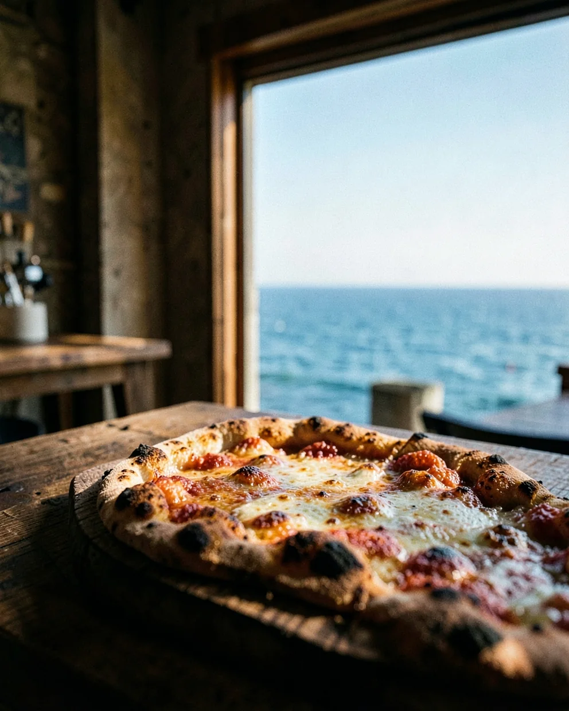
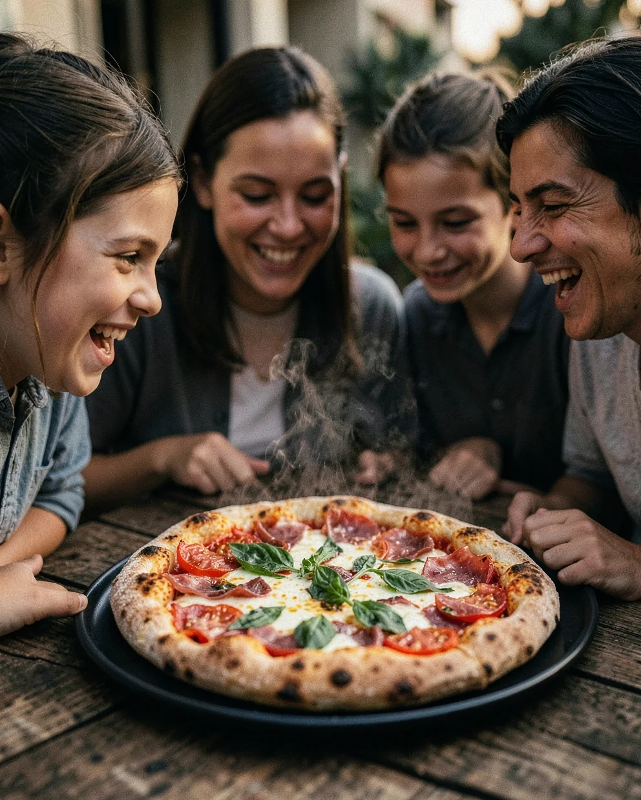

Pizza napoletana vera a Padova, direttamente dal forno a legna
Impasto a lenta lievitazione 48 ore, ingredienti DOP campani e veneti, cottura a 450°C.
Scopri di più
Ecco la nostra filosofia: impasto a lunghissima lievitazione e ingredienti DOP
1. Preparazione dell'impasto in zero ospitalità, con farine biologiche macinate a pietra. 2. Lievitazione naturale 48 ore per un cornicione soffice e digeribile. 3. Cottura a 450°C nel forno a legna, con pomodori San Marzano DOP e mozzarella di bufala campana fresca.
I Nostri Servizi Esclusivi
-
01
Cena in Sala nel Centro Storico
-
02
Asporto & Take Away
-
03
Eventi Privati & Feste

La soddisfazione dei nostri ospiti
Oltre 1.200 clienti soddisfatti a Padova. Riconosciuti tra le migliori pizzerie veraci del centro storico per recensioni su Google e TripAdvisor.
Prenota il tuo tavolo per stasera
Domande frequenti
Avete opzioni per intolleranti al lattosio o vegetariani?
Sì, disponiamo di mozzarella senza lattosio e numerose pizze vegetariane ricche di verdure di stagione.
È necessario prenotare in anticipo?
La prenotazione è fortemente consigliata, specialmente nei weekend da venerdì a domenica.
Fate anche asporto e consegna a domicilio?
Sì, siamo operativi per take-away diretto e delivery tramite i principali servizi cittadini.